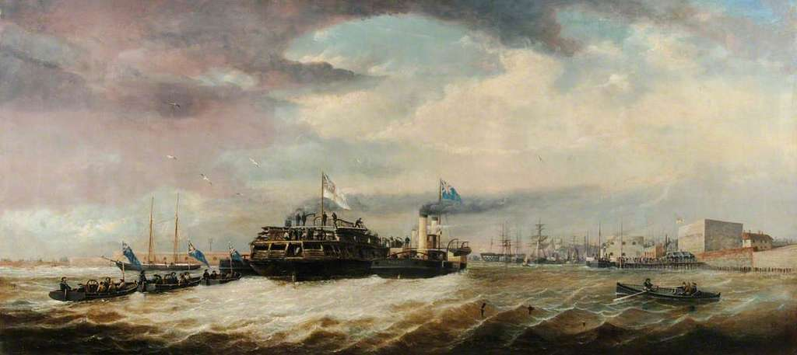
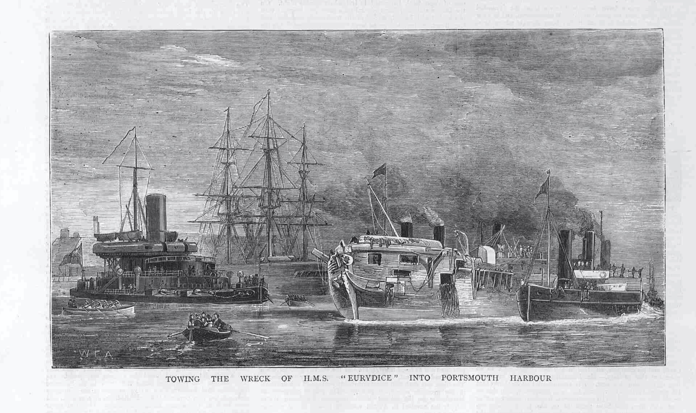

The Eurydice Returns To Portsmouth#
With the Eurydice eventually pumped out and refloated, it was now time for her final voyage: being towed back to Portsmouth.
On Sunday, September 1st, with the final leaks addressed, the Eurydice would at last be pumped out and floated, and be towed back to Portsmouth Harbour, passed a crowd of Sunday promenaders at Southsea.
The following report well describes her battered, patched state, a far sight different to her original splendour.
THE EURYDICE. - Monday, September 2nd, 1878
Nottingham Evening Post, 1878-09-02, p. 4
Floating of the Vessel.
The Eurydice has last been safely brought to surface, the following operations having been successfully accomplished yesterday, and the vessel was towed into Portsmouth exactly weeks after her homeward voyage was brought to so abrupt and sad a termination. Since the ill-fated ship foundered off Dunnose on the memorable of May [sic], several attempts to raise her have beet made. Some were attended with partial success, whilst others completely failed. Within the last few days, however, success has been confidently anticipated by those officials who took charge of the operations, and only so recently as Wednesday it was hoped that their object would have been attained. Then everything was in readiness, and by midnight it was hoped to see the ship safely brought into harbour. When, however, the pumps were set to work it was manifest that there was decrease of water, and it was reported that other leaks than those already known of existed. Consequently the attempt was abandoned, and examination showed that there was yet another rather serious leak, which would necessarily have to be stopped before the wreck could floated. Shipwrights and others were set to work patch up these recently discovered defects, and by Sunday night the work was completed, and the Eurydice was once more in readiness for the process of pumping out. The general public, however, were not aware of the attempt raise the ship being made, and, indeed, having been so frequently without any substantial success attending it, is possible that had it been generally known many wonld have been extremely sceptical as to the result. early as six o’clock on Saturday morning Rear-Admiral the Hon. F. A. C. Foley, Admiral-Superintendent of the dockyard, who has charge the operations, proceeded to the wreck. The tugs Marnby, Sampson, and Malta were ranged on either side of the wreck, the hose from their steam pnmps being laid on to the deck of the Eurydice ready to commence pumping her out. The tug Grinder was in waiting to take the in tow should it be successfully floated. It was low water 7.30, at which hour the pumps were set to work. Admiral Foley and Lieut. Albert R. Wonhorn, of the Iris, who has taken an active part in the operations, were on the deck of the Eurydice anxiously awaiting the result of the attempt. It was presently reported that there was a diminution of water in the ship which gradually began to rise, together with the hopes of the authorities. As the buoyancy of the wreck continued it was apparent that the desired degrees of success had now been attained, and mutual congratulations were exchanged. By two o’clock the Eurydice was afloat, and once more being entitled to rank as ship of her Britannic Majesty’s navy. Lieutenant Wonhorn hoisted the ship ensign on impromptu mast, which had been erected on the bridge. The flag was the same one fluttered from the Eurydice’s mast when she foundered, but under what vastly different circumstances did the English colours now float over the old hull? The Grinder at once took the wreck into tow. The three tugs being ready with their pumps in ease their services should be required. The flotilla then moved slowly in the direction of Portsmouth, abont dozen of the officials taking their positions on the bridge of the Eurydice, upon which post twenty-three Sundays since Capt. Hare stood and gave his last orders for the final effort to be made to save his smart ship and her gallant crew. As the Eurydice and the attendant craft got abreast of Southsea beach she was recognised by several persons. The beach is always well thronged with promenaders on Sunday, and the usual morning attendance had just been augmented by hundreds of persons coming from church. Consequently the beach and piers were soon lined with spectators, who evinced the utmost curiosity and interest in the proceedings. As the ship approached the harbonr the “ pilot jack “ was run up at the Semaphore Tower in the dockyard. This flag is always exhibited when ship is either entering or leaving harbour, that the Eurydice, notwithstanding her battered and dismantled condition, still regarded a ship in commission, although but two of her crew remain to be paid off. As ships passed the various vessels in the harbour, the decks were lined with officers and men, many of whom had lost both relatives and friends in the foundering of the ship which had now been recovered from the deep. Amongst the spectators board the flagship Duke of Wellington, were Cuddeford and Fletcher, the two survivors who are waiting the result of the court-martial, the finishing of which will now be read to-day within sight of the vessel, whose stability is one of the questions which the Court has to inquire into. The vessels continned to the extreme end of the harbour, beyond the north corner of the dockyard, and the Eurydice was then safely berthed alongside the Laurel hulk. The steam then withdrew, party being left on board to take charge, together with two of Merryweather’s powerful steam engines, which were to be used in continuing the work of pumping. Only one, however, was needed to keep the water under, for it was found the Eurydice only leaked to the extent of three inches half an hour. The hull of the Eurydice presents a sadly different appearance from what she did on the day she foundered. The smart white hull, chequered with its black ports, has all disappeared, and in its place is a hull denuded of all its paint, scratched and splintered i all directions, whilst numerous planks, nailed on the sides for the purposes of repairing some of the leaks, are not calculated to add to her smartness. One more body was discovered on the lower deck, making it altogether 180 recovered from the wreck. It is probable that a few more might be found in the lower part of the ship, but the remainder of the crew of 300 odd lie down beneath the deep which oft in the triumph bore them. They sleep a sound aand peaceful sleep, with the wild waves dashing over them. Many parties sailed round the wreck during the afternoon, and satisfaction was expressed at the successful result of the operations.
[A summary of the last day of the court-martial also appeared under he heading “The Court Martial”.]
Syndicated News
What were the means by which news was syndicated and/or republished without permission in 19th century newspapers?
The next, short article, notes how many of the sightseers to the wreck would have surely sought a memento of the wreck.
THE EURYDICE. - Monday, September 2nd, 1878
Bradford Daily Telegraph, 1878-09-02, p. 3
The work of clearing out the Eurydice is commence to-day. As soon as it can be done, the ship is be brought into dock to have thorough overhaul. The wreck has been the attraction for numerons excursion parties, and the authorities have great difficulty in preserving the ship intact, so eager are persons to carry away pieces of wood as mementes of the sad calamity.
Following the return to Portsmouth Harbour, the Eurydice was laid up in Portchester Creek.
THE EURYDICE TAKEN TO PORTSMOUTH. - Thursday, September 5th, 1878
Isle of Wight Times, 1878-09-05, p. 5
About noon on Sunday persons on Ryde Pier and the Esplanade observed a small fleet of tugs under steam in the offing towards Sea View, and it was soon asserted that the Eurydice was being towed into Portsmouth Harbour, and a further scrutiny through telescopes continued the rumour, that at last the unfortunate ship was onde more fairly afloat, although it was difficult to believe that after the storms on Thursday night and Friday morning, the work of pumping out could have been effected. On Saturday the divers were busily engaged in making good the serious damage to the starboard and bilge, in default of doing which pumping out would have simply been impossible. From the commencement of their arduous task, the submarine workmen have shown a devotion to duty which has elicited the warm approval of the chief officers concerned. They worked with a persistent energy for hour after hour in repairing the bilge, from which, by contact with the bottom in the different lifts, three strokes of planking had been torn away for a distance of between forty and fifty feet, and nightfall had set in before they reported that the damage had been well migh made good. Canvas was stretched and fastened over the injured bilge, and covered with battens.
At five o’clock on Sunday morning the divers, seven in number, gave the finishing touches to their work, and, an hour later, Admiral Foley, Mr. J. Robinson, Chief Constructor at Portsmouth, Captain Batt, Master Attendant at Chatham, Lieutenants Wonnam and Moss, and J. C. Froyne, the Second Constructor at Portsmouth, with others, were on the spot, and preparations were made for pumping the wreck. Jenkins, a shipwright diver from Sheerness, in cutting a large scuttle hole into the lower deck, in order to carry down a suction pipe, discovered the body of a seaman in a store room, which was removed and taken into harbour for interment. At about seven o’clock the pumping was commenced, the Sampson and Grinder Government tugs setting to work with their steam pumps on the port, and the Manly and Malta — also Government tugs — on the starboard side. The pumping was continued for about four hours, and as the water in her was gradually lessened it was seen the divers had effectually stopped the serious leak on the starboard bilge, and that there was every probability that the wreck would be got into harbour. About half-past eleven the hull began to move, and the officers and men on the different craft gave three hearty cheers, while just afterwards an ensign was once more hoisted on board the Eurydice. Admiral Foley and other officials, with Mr. J. S. Harding, senior Admiralty pilot and Assistant Queen’s Harbourmaster at Portsmouth, who piloted her into harbour, went on board, and shortly before noon she was on her way to Portsmouth harbour, a distance of about six miles. First came the Camel tug, towing five divers’ boats, followed by the Grinder, which had the mastless wreck in tow, the latter having the Sampson and Manly lashed to her port side, and the Malta to her starboard. As the flotilla slowly approached Portsmouth some thousands of spectators flocked to the piers, beach, and lined the ramparts. The slow progress arose from the tide being against the craft until the spit was reached, after which they came into harbour on the flood tide, the help thus obtained enabling the tugs to proceed under easy steam. The weather was fine, with light wind and cloudy sky. By two o’clock the Eurydice had been safely secured alongside the Laurel, in Porchester Lake, and the Swan, with two steam fire engines, was placed alongside her, to resume pumping should it be found necessary. During the afternoon the waterman reaped a harvest, and the vicinity of the wreck was thickly thronged with boats crowded with people anxious to get a sight of the wreck, which presented a very dilapidated appearance. The battered weather-beaten hull was all that the public were allowed to see on Sunday. The work of clearing the lower deck and of fumigating will probably be commenced prior to the wreck being placed in dock.
In the Isle of Wight Times, a tone of lament was struck.
RYDE, THURSDAY, Sept. 5, 1878 - Thursday, September 5th, 1878
Isle of Wight Times, 1878-09-05, p. 4
The Eurydice has at length been raised and safely towed into Portchester Creek. How anxiously have the public, watched the proceedings of floating and pumping out of what six months ago was a stately vessel in full sailing trim, but now a battered hull. A good sized volume has been written and published about the disaster of March 24th, 1878, but how many volumes would it require to recount the heart-anguish caused by the upsetting of a single ship? How many homes have been desolated by the loss of loved ones just entering upon the active duties of life! How much must for ever remain unwritten on the exact fate of the bodies of the hundreds who perished on that fatal Sunday afternoon. Although the good ship foundered so near to land, not more than a moiety of the bodies have been recovered, and many of these were past all identification. There must be many nameless if not tombless graves, and who shall calculate the amount of suspense and eager expectation of the many fathers, mothers, and other relatives throughout the past, to them, dreary five months, as now and again bodies were washed ashore or picked up from the wreck. Not that there could possibly be any hope of any being restored to life; but the hope that at least there would be the melancholy satisfaction of knowing where the bodies of the loved ones were. Had the Eurydice gone down far out at sea there would have been at least some certainty that the forms of the lost ones could never again be seen by their sorrowing friends ; but within a few cable lengths of the shore the case was different. Again, how few have realised, to any appreciable extent, the fact that the workers at the wreck have had to carry on their labours in the presence, it might be, of some hundreds of corpses. Doubtless thousands have visited the vicinity of the wreck, and many expressions of sympathy have found place in the remarks of the spectators; but how many of the vast number who have heard of, read of or witnessed the catastrophe have been able to estimate the unpleasantness of the work of raising a ship in the hull of which might be entombed hundreds of human beings. It is well perhaps, that people cannot, even in imagination. enter minutely into the details of such things, and it is a merciful arrangement of Providence that a veil is drawn over many of the more painful incidents in connection with such calamities. There is at least one redeeming and consolatory feature in connection with the loss of the Eurydice, in the fact that there has been a general acquittal of blame on the part of the Captain or any one engaged in sailing the ship. The Court-Martial was concluded on Saturday; on Cuddiford, one of the survivors, being asked if be wished to add anything to the evidence he had given, replied in the following noble testimony to the ability and worth of the lamented Captain of the Eurydice :— “I should like to be allowed to say before this court-martial is concluded how much we all loved and respected our noble captain. We had unbounded confidence in him, knowing that as a sailor he was surpassed by none, and I am sure he had the love and respect of every officer and man in the ship, for he studied their comfort and happiness in all respects. We were proud of our captain, we were proud of our officers, and proud of our ship, looking upon her us admirably adapted for the service in which she was employed.” The other survivor, Sydney Fletcher, entirely confirmed this testimony.
THE EURYDICE FLOATED AND TOWED INTO PORTSMOUTH. - Friday, September 6th, 1878
Newcastle Courant, 1878-09-06, p. 2
The Eurydice has at last been safely brought to the surface, the floating operations having been successfully accomplished on Sunday, and the vessel was towed into Portsmouth exactly twenty-three weeks after her homeward voyage was brought to so abrupt and sad a termination. The beach was always well thronged with promenaders on Sunday, and the usual morning attendance had just been augmented by hundreds of persons coming from church. Consequently, the Beach and Piers were soon lined with spectators who evinced the utmost curiosity and interest in the proceedings. As the ships approached the harbour the “Pilot Jack” was run up at the Semaphore Tower in the dockyard. This flag is always exhibited when a ship of the navy is either entering or leaving harbour, so that the Eurydice, notwithstanding her battered and dismantled condition, is still regarded as a ship in commission, although but two of her crew remain to be paid off. As the ships passed the various vessels in the harbour the decks were lined with officers and men, many of whom had lost both relatives and friends in the foundering of the ship which had now been recovered from the deep. Amongst the spectators on board the flagship, Duke of Wellington, were Cuddiford and Fletcher, the two survivors, who are waiting the result of the court-martial, the decision of which will be read to-morrow. The vessels continued to the extreme end of the harbour, beyond the north corner of the dockyard, and the Eurydice was then safely berthed alongside the Laurel hulk. The steam tugs then withdrew, a party being left on board to take charge, together with two of Merryweather’s powerful steam engines. which were to be used in continuing the work of pumping. Only one, however, was needed to keep the water under, for it was found that the Eurydice only leaked to the extent of three inches in half an hour. The hull of the Eurydice presents a sadly different appearance from what she did on the day she flundered. The smart white hull, chequered with the black ports, has all disappeared, and in their place is a hull denuded of nearly all its paint, scratched and splintered in all directions, whilst numerous planks nailed on to the sides for the purpose of repairing several of the leaks are not calculated to add to her smartness. One more body was discovered on the lower deck, making altogether 130 recovered from the wreck. The entire centre of the upper deck is washed away through the violence of the waves during the tinm the wreck lay in Sandown Bay. The planks placed crosswise form a means of communication from one part of the upper deck to the other. On going below a scene of chaotic confusion presented itself. Most of the gear has been removed from the main deck, and many of the cabins knocked away; but the deck is still littered with the broken spars and rigging. It is upon the lower deck that the scene is most chaotic; the deck is littered with debris from end to end, and the whole is covered with a muddy slime several inches deep. Officers’ chests, men’s clothes, bags, beer barrels, bird cages, pickle bottles, surgical cases and instruments lie upon the deck in a heterogeneous mass. Locomotion between decks, in consequence of the quantity of mud which has been washed in, was extremely difficult. On the lower deck is situated the bread room, from which a most intolerable stench proceeded from the decomposed bread and other provisions, notwithstanding the fact that the decks are continually washed with carbolic acid. The captain’s cabin has been entirely removed. On the lower deck are several cells, in one of which a prisoner was found minus his head. The poor fellow was not chained; but another one on the lower deck was. The irons have been found near the mainmast, but no body. The holds it is at present impossible to get down into, owing to the fact that all the moveable gear near the spot has rolled into them and choked them up. In making room for the suction pipes to go down the lumber into the hold the divers came across a body jammed in, and supposed to be that of the bread room boy. Several articles of uniform and clothing were scattered atout the lower deck, amongst which is a lieutenamt’s undress uniform coat. The coart-martial assembled to inquire into the cause of the loss of the Eurydice delivered their finding on Monday. They were of opinion that the ship foundered in a sudden and exceptionally dense snowstorm on March 24, by pressure of wind on the sails, and that the upper half-ports being justifiably open, considering the state of the previous wind and weather, naturally conduced to the catastrophe. No one is to blame, the captain being frequently on deck, and carrying on duty before and at the time the squall struck her. The court is further of opinion that the stability of the ship was maintained after her adaptation as a training ship, and that after the alterations in May, 1877, she was in every respect an efficient ship. They fully acquit the two survivors, Cuddiford and Fletcher. A report as to whether the Eurydice is to be repaired has not yet been presented, but there is very little doubt that the wreck, as soon as it has been cleared, will be taken into dock and broken up. The hull is in a most dilapidated condition, and altogether so strained that it would probably cost more money to place the Eurydice in sea-going trim than the ship would be actually worth. The opinion that she will be broken up is strengthened by the fact that many vessels in far better condition which have been broken up.

Fig. 42 Henry Robins - Wreck of HMS ‘Eurydice’ Towed into Portsmouth Harbour, 1 September 1878 HMP PORMG 1974 517 , Portmsouth City Museum#
The Eurydice was towed into Portsmouth Harbour on Sunday, the leaks having been to a great extent cl - Saturday, September 7th, 1878
Isle of Wight Observer, 1878-09-07, p. 6
osed, and the water pumped out until she drew only two feet more than her proper draught. The ill-fated vessel, which has been laid up alongside the old hulk Laurel in Portchester Creek, a continuation of Portsmouth Harbour, continues to be the centre of attraction. The wreck so recently recovered from the deep is, however, zealously guarded by a detachment of Marines, until the work of clearing out has been finished. The entire centre of the upper deck is washed away through the violence of the waves during the time the wreck lay in Sandown Bay. The planks placed crosswise form a means of communication from one part of the upper deck to the other. On going below a scene of chaotic confusion presents itself. Most of the gear has been removed from the main deck and many of the cabins are knocked away, but the deck is still littered with the broken spars and rigging. The lower deck is littered with debris from end to end, and the whole is covered with a muddy slime several inches deep. Officers’ chests, men’s clothes bags, beer barrels, bird cages, pickle bottles, surgical cases and instruments, which have fallen from the adjacent dispensary, lie upon the deck, a heterogeneous and confused mess. Locomotion between decks in consequence of the quantity of mud which has been washed in is extremely difficult. The main-mast, the lower, part of which still remains in the ship, was hoisted up out of the vessel, a distance of nearly six feet, by the bumping action to which the vessel was subjected. The starboard side of the lower deck has also been considerably lifted owing to the action of the sea. Right aft, on the lower deck is situated the bread room, from which a most intolerable stench proceeded from the decomposed bread and other provisions, notwithstanding the fact that the decks are continually washed by carbonic acid. The captain’s cabin has been entirely removed. On the lower deck are several cells, in one of which a prisoner was found, minus his head. The poor fellow was not chained, but another one at large on the lower deck was. The irons hay been found near the mainmast, but no body. The hold is at present impossible to get down into owing to the fact that all the movable gear near the spot has been rolled into them and choked them up. In making room for the suction pipes to go down between the lumber into the hold the divers came across a body jammed in, and supposed to be that of the bread room boy. Several articles of uniform clothing lie scattered about the lower deck, amongst which was a decent undress uniform coat. The working party came across a skull, but no more bodies. In case the vessel should meet with any untoward accident, anchors have been laid out from her, so that in case the necessity should arise she can be immediately hauled up on to the mud. One of the steam engines got to work periodically continues to be sufficient to keep the water under. As soon as possible, the work of clearing out the ship, a labour of considerable magnitude, will be concluded, and the vessel fumigated and brought into port ; but this is not likely to take place for at least a fortnight.
[EXTRACT]
It didn’t taken long for a journalist from the North British Daily Mail to find their way on board.
VISIT TO THE EURYDICE. - Tuesday, September 3rd, 1878
North British Daily Mail, 1878-09-03, p. 5
The Eurydice, laid up alongside the old hulk Laurel in Porchester Creek, a continuation of Portsmouth Harbour, continues to be the centre of attraction. The wreck, so recently recovered from the deep is, however, zealously guarded by a detachment of marines until the work of clearing out the wreck has been finished. Through the courtesy of Admiral Foley, however, the Central News correspondent was enabled to make as examination of the whole of the ship yesterday afternoon. The entire centre of the upper deck is washed away through the violence of the waves during the time the wreck lay in Sandown Bay. The planks placed crosswise form a means of communication from one part of the upper deck to the other. On going below a scene of confusion presented itself. Most of the gear has been removed from the main deck, and many of the cabin knocked away, but the deck is still littered with the broken spurs and rigging. It is upon the lower deck that the scene is most chaotic. The deck is littered with debris from end to end, and the whole covered with a muddy slime several inches deep. Officers chests, men’s clothes, bags, beer barrels, bird cages, pickle bottles, surgical cases and instruments which have fallen from the adjacent dispensary, lie upon the deck a heterogeneous and confused mass. Locomotion between decks in consequence of the quantity of mud which has been washed in was extremely difficult. The mainmast, the lower part of which still remains in the ship, was hoisted up out of the vessel, a distance of nearly six feet, by the bumping action to to which the vessel was subjected. The starboard side of the lower deck has also been considerably lifted out owing to the action of the sea. Right aft on the lower deck is situated the bread room, from which a most intolerable stench proceeded from the decomposed bread and other provisions, notwithstanding the fact that the Weeks are continually washed with carbolic acid. The captain’s cabin has been entirely removed. On the lower deck are several cells, in one of which a prisoner was found, minus his head. The poor fellow was not chained, but another one, at large on the lower deck, was. The irons have been found near the mainmast, but no body. The holds are at present impossible to get down into owing to the fact that all the movable gear near the spot has rolled into them and choked them up. In making room for the suction pipes to go down between the lumber into the hold, the divers came across a body jammed in, and supposed to be that of the breadroom boy. Several articles of uniform clothing were scattered about the lower deck, amongst which is a lieutenant’s undress uniform coat. Yesterday the working party came across a skull, but no more bodies. In case the vessel should meet with any untoward accident, anchors have been laid out from her, so that, in case the necessity should arise, she can be immediately hauled up on to the mud. One of the steam engines, got to work periodically, continues to be sufficient to keep the water under. As soon as poesible the work of clearing the ship — a labour of considerable magnitude—will be concluded, and the vessel fumigated and brought into port; but this is not likely to take place for at least a fortnight.

Fig. 43 https://www.britishnewspaperarchive.co.uk/viewer/BL/9000057/18780914/014/0006?browse=true The Graphic - TOWING THE WRECK OF H.M.S. EURYDICE INTO PORTSMOUTH HARBOUR - Saturday 14 September 1878, p8#
NEWS OF THE DAY. - Tuesday, September 10th, 1878
Portsmouth Evening News, 1878-09-10, p. 2
…
The Eurydice. —The following letter has been communicated by Admiral Fanshawe, Commanderin-Chief at Portsmouth, to Rear-Admiral Foley, the Dockyard Superintendent, to whom it has been officially promulgated for the information of all the officers concerned in the raising of the Eurydice : “Admiralty, Sept. 4, 1878. —Sir,—I am commanded by my Lords Commissioners of the Admiralty to acquaint you that they have received her Majesty’s commands to convey to you and to Rear-Admiral Foley the expression of her satisfaction on the successful termination of your exertions in bringing her ship Eurydice into harbour. 2. Their lordships desire that communicating the contents of this letter to Rear-Admiral Foley you will inform him that it gives them great pleasure to convey this expression of her Majesty’s satisfaction, the results of their labours reflect great credit upon all the officers and men employed upon this painful duty. I am, Sir, your obedient servant, (Signed) Robert Hall.” The Eurydice remains upon the mud bank in Porchester Lake. The ports on both sides, which have been closed during the lifting operations, have been opened for the purpose of admitting a current of fresh air throughout the ship, and with the same object in view several strakes of the upper and main deck have been removed. Water is also permitted to flow into the hold at high water, and is afterwards pumped out as the tide falls. When the ship has been cleaned and sweetened by these means, she will be taken into docke and broken up. It is expected that a fortnight will elapse before she will be sufficienty deodorized for the purpose. A correspondent writing to the Morning Pott from the Isle of Wight, under date Sept. 7th, with reference to the loss of the ship says :—” I beg to enclose a cutting from the Isle of Wight Observer of to-day show you what people here think of the matter. We cannot concede that the high land could possibly have hidden the coming storm. The fact is that, knowing the coast and the position of the vessel, we consider such an idea preposterous and absurd. It never could have done so, and least of all after she had passed the same high land, she had done, and was two miles out at sea. The storm gave ample warning of its approach ; an hour previously the sky was most threatening, and half hour before there was gloom like that of an eclipse.
THE EURYDICE IN PORT. - Thursday, September 12th, 1878
Isle of Wight Times, 1878-09-12, p. 5
The hull of the Eurydice formally passed into the hands of the Commander-in-Chief on Monday, and steps were at once taken to clean and sweeten her by means of carbolic acid and other disinfectants. Lieut. Izat and a party from the Duke of Wellington are engaged in clearing out the vessel, private baggage being removed before the stores of the ship, and two dockyard divers, Hicks and Macculloch, are told off to attend the ship night and day in case their services may be wanted at any time, but as the percolation of water in to the hold does not exceed one foot per hour, one of the Merryweather fire-engines suffices to pump out three hours’ leakage in half an hour. As the ship becomes embedded in the harbour mud at every fall of the tide, the seams of the hull are closing up and the leakage is becoming gradually less. On Tuesday the skeleton of the gunner was found in his cabin, and removed to Haslar Hospital for interment. When the ship has been thoroughly cleaned she will be taken into the deep dock and broken up.
NAVAL AND MILITARY - Tuesday, September 17th, 1878
Bury and Norwich Post, 1878-09-17, p. 3
The Eurydice. — lt bas been decided to break up the Eurydice. Most of the moveable gear has been takeu out of the wreck, and on Friday a gang of shipwrights was at work breaking up the upper portion of the hull. Tbat having been done the remainder will be brought into dock, where the breaking-up will be concluded.
News of the Day - Monday, September 23rd, 1878
Portsmouth Evening News, 1878-09-23, p. 2
The training ship Atalanta, which was commissioned last week, will proceed on a similar oruise to that which the Eurydice was on ths eve of completing when she capsized off the Isle of Wight. She leaves Deyonport early in October, to proceed the West Indies, returning home next spring.
In Mansfield, it seems the subject of the Eurydice was used as the basis of a sermon at the Wesleyan Chapel.
Mentions of Current News Stories in Church Sermons
To what extent might we be able to make use of Church sermons as a social and religious commentary on the news of the day?
WESLEYAN CHAPEL. - Friday, September 27th, 1878
Mansfield Reporter, 1878-09-27, p. 8
The quarterly meeting of the Mansfield Wesleyan Methodist Circuit was held on Wednesday, in the Wesleyan Chapel, Bridge Street. In the afternoon the Rev. P Mackenzie, of Leeds, preached from psalm cxxxvi., verse 23: “ Who remembereth us in our low estate, for His mercy endureth for ever.” In opening his address, the rev. gentlemen said the Psalm from which he was about to preach had been a Te Deum of the early Christians, and they were never tired of it ; the Levite was in the habit of using it to give thanks to his Lord. In the three first verses so divines tell us—we have the Trinity, and that was sufficient to recommend it to all. Speaking of the infinite power of the Lord, the rev. gentleman said. “if he wants flood He can bring it out of flint, and if he wants dry land he can freeze the sea all up, and tumble it out of the way.” People forgot when they were in trouble that God’s mercy endureth for ever. On the 24th of last March, when the unfortnnate Eurydice went down off the coast of the Isle of Wight, some of the boys on board of her were expected to shortly arrive in Leeds ; beds were warmed for them, and their friends waiting, but that awful gust of wind came, she went over and could not right herself, her ports filled, and she went down with nearly all on board. She was however afterwards raised and towed into Portsmouth harbour ; caulked, and supported, and made to float again If that good ship could have spoken it would have thanked those men for taking it out of the deep, and thanked them truly, for it could not have risen of itself. It is so with us. We were being buried very fast at one time, but the Lord Jesus Christ brought the pumping gear and pmped the devil and sin and carnet lust all out of us. The droll and energetic manner in which the rev. gentleman conducted himself kept the congregation in a perpetual titter during the whole delivery of the sermon ; but, notwithstanding this, his earnestness was very impressive.—At five o’clock a number of the members and friends of the congregation sat down to an excellent tea in the schoolroom in Stanhope Street.
EURYDICE. - Sunday, October 6th, 1878
Lloyd’s Weekly Newspaper, 1878-10-06, p. 5
All that remains of the unfortunate Eurydice was brought down the harbour on Wednesday morning and floated intothe deep dock at Portsmouth, where she will be broken up. The whole of the decks had been removed and the sides of the hull taken to pieces as far as the main deck before she was docked, and nothing remains of the interior but a few of the lower beams. A number of derricks had been erected near the clock, and by the time the bell rang all of the ship above her copper had been sent ashore and stacked for sale, and in a week’s time, unless the bolts should prove unusually troublesome, the Eurydice will have wholly disappeared.
The Eurydice has been brought into dock at Portsmouth for the entire demolition of the hull. - Friday, October 11th, 1878
Luton Times and Advertiser, 1878-10-11, p. 8
HAMPSHIRE ADVERTISER — PORTSMOUTH BRANCH - Saturday, October 12th, 1878
Hampshire Advertiser, 1878-10-12, p. 8
Although Messrs. Siebe and Gorman, the marine engineers, have themselves made no charge for services in connection with the raising of the Eurydice, the bill which they sent in to the dockyard authorities at Portsmouth for wages due to their three divers amounts to the handsome sum of 900 guineas. The divers are paid at the rate of £1 5s per tide of four hours, aad £1 per day when from stress of weather or other cause no diving was done. A single descent counts as a tide should nothing further be performed. The divers also drew their rations from the Pearl. The dockyard divers were paid at the rate of £1 2s 6d for the double tide, and 5s a day when not diving.
By mid-October, the Eurydice had been dismantled and her timbers were being sold off as old timber.
THE LAST OF THE EURYDICE. - Friday, October 18th, 1878
Dundee Evening Telegraph, 1878-10-18, p. 2
The last of the Eurydice was seen yesterday, when the old timbers of the ship were sold at Portsmouth Dockyard by public auction. An order from the Admiralty prohibited the remnants of the ship being sold as relicts of the Eurydice, so the lots were simply sold as old timber. The prices were about the ordinary, as the interest in the wreck has by this time altogether subsided.
THE EURYDICE. - Friday, October 18th, 1878
Sheffield Independent, 1878-10-18, p. 2
The last of the Eurydice was seen yesterday, when the old timbers of the ship were sold at Portsmouth Dockyard by public auction. An order from the Admiralty prohibited the remnants of the ship being sold as relics of the Eurydice, so the lots were simply sold as old timber. The prices were about the ordinary prices, as the interest in the wreck has by this time altogether subsided.
The Diving at the Wreck of the Eurydice. - Saturday, October 19th, 1878
Isle of Wight Observer, 1878-10-19, p. 5
With reference to the amount paid to the divers in connection with the raising of the Eurydice, Messrs. Siebe and Gorman, submarine engineers to the Royal Navy, write that they had four men engaged at the wreck, and not three, as stated, and that it was only their foreman diver who received £1 5s. per tide. During the four months that operations were carried on the men were working day and night, and the pay they received was in the aggregate the same as that of the dockyard divers.
A few relics from the ship were passed to the Princess(?) of Wales and Captain Hare’s widow.
[Relics] - Saturday, October 26th, 1878
St. Neots Chronicle and Advertiser, 1878-10-26, p. 3
Relics of the ill feted Eurydice have been forwarded from Portsmouth to the Princess of Wales and Mrs. Hare, the widow of the captain of the ill-fated ship.
[Also included a report about the Eurydice relief fund that appeared in the Southern Times and Dorset County Herald, and presumably elsewhere, on the same date.]
The story ends with the re-rating of the two survivors, Cuddeford and Fletcher’s, and the Lord of the Admiralty taking the unusual step of making good their losses from the ship.
NAVAL INTELLIGENCE - Sunday, December 22nd, 1878
Reynolds’s Newspaper, 1878-12-22, p. 2
The Lords of the Admiralty have departed from the rule laid down in the Adminalty circular on the subject of losses of clothes, &c., on service, and have given directions for Benjamin Cuddiford and Sydney Fletcher, the two survivors of the ill-fated Eurydice, to be paid the amount of cash which they state was in their possession at the time of the disaster. They also approved Sydney Fletcher being rated an ordinary seaman from the 1st of January last, he having stated that he was so rated on that day on board the Eurydice. Benjamin Cuddiford has been rated leading seaman by the captain of the Duke of Wellington.